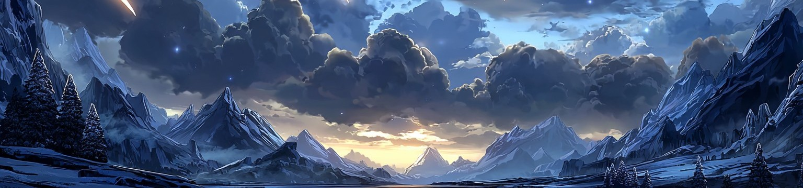
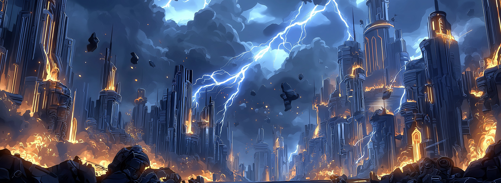
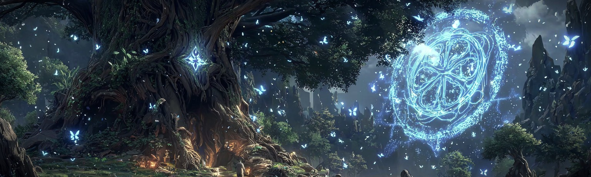
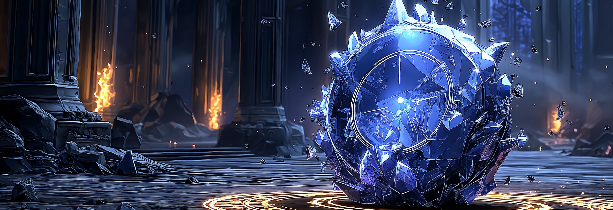

MAIN QUESTS
主線任務 / 四季章節
每一季就像一個大型任務。角色會長大、變勇敢，也會失去東西。
它不是單集冒險，而是一場慢慢揭露真相的旅程。

第一季： 最遙遠的地方

第二季：埃爾達瓦城之戰
不是傳說，是第一場真正流血的夜晚。

第三季：穆高爾森林之謎
森林記得一切，甚至你想忘掉的。

第四季：古堡的詛咒
古堡不是廢墟，它在等誰回來負責。
CHARACTERS
角色群像
這些不是路人。每一個人都把故事往前推了一步。
點角色卡可以查看詳細資料。
第一季重要角色
第二季新增重要角色
第三季新角色
第四季新角色（預告 / 暫定）
ARTIFACTS
關鍵道具 / 魔法物件
這些不是普通的道具。它們是線索、是保護、是承諾、是秘密的證明。
MUSIC
主題曲 / 角色曲 / 片尾曲
這些歌是角色心裡沒講出口的話。
EPISODES
分集故事
每一集不是單獨的冒險，而是下一個選擇。
第一季｜最遙遠的地方
第二季｜埃爾達瓦城之戰
第三季｜穆高爾森林之謎
第四季｜古堡的詛咒
TIMELINE
主線關鍵事件
世界是在「哪一刻」徹底改變的？
這些不是背景設定，是傷疤。
FACTIONS
勢力 / 陣營
沒有人是完全的善，也沒有人是純粹的壞。
每一個陣營都有他們「為什麼要活下去」的理由。
WOLF CLANS
狼族血脈
狼族不只是一個傳說。
他們有記憶、有階層、有責任。
CREDITS
製作 / 聯絡
如果你想合作、投資、發行、動畫化、遊戲化，這裡是我們的基本資訊。
創作 / 世界觀
原作 :超夢莉媽媽
故事線控管：雪狼戰隊
世界觀顧問：穆高爾研究會
視覺 / 設計
角色視覺：魔法設計室
概念美術：雪之工作站
Logo / UI / HUD：Esports Lab
聯絡 / 合作
商業合作 / 授權 / 出版 / 動畫改編
Email：molodyschool@gmail.com
（請附上公司/用途/時程）